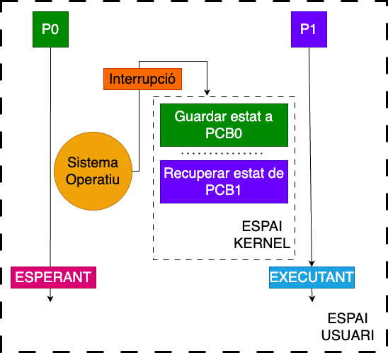

Crides a sistema
Unitat 2 · Sistemes Operatius (SO)
Que són les crides a sistema?
Les crides a sistema són interfícies que permeten a un programa en mode usuari sol·licitar serveis al nucli del sistema operatiu de manera segura i controlada.
| Sistema operatiu | Nº aproximat de syscalls | Notes |
|---|---|---|
| Linux x86_64 | ~300 | Variació segons kernel |
| FreeBSD | ~500 | Inclou syscalls BSD històrics |
| Windows NT | ~2000 | Crides natives Nt*; moltes encapsulades en DLL |
Normalment s’accedeix a les syscalls a través de llibreries de sistema, que encapsulen i abstrauen les crides:
- Unix/Linux: libc (stdio.h, stdlib.h, sys/types.h, sys/shm.h, …)
- Windows: API de Windows (kernel32.dll, ntdll.dll, …)
Principals crides a sistema? (I)
| Categoria | Windows (API / Syscall) | Unix/Linux (Syscall) | Descripció |
|---|---|---|---|
| Control de processos | CreateProcess() / NtCreateProcess |
fork() / clone() |
fork() crea un procés fill; Windows encapsula la syscall amb CreateProcess. |
ExitProcess() / NtTerminateProcess |
exit() |
Tanca el procés. | |
WaitForSingleObject() / NtWaitForSingleObject |
wait() / waitpid() |
Sincronització de processos. |
Principals crides a sistema? (II)
| Categoria | Windows (API / Syscall) | Unix/Linux (Syscall) | Descripció |
|---|---|---|---|
| Informació i temporització | GetCurrentProcessId() / NtQueryInformationProcess |
getpid() |
Retorna PID. |
SetTimer() / NtSetTimer |
alarm() / nanosleep() |
Temporització i delays. | |
Sleep() / NtDelayExecution |
sleep() / nanosleep() |
Pausa el procés; variants més precises disponibles. | |
| Comunicació entre processos (IPC) | CreatePipe() / NtCreateNamedPipeFile |
pipe() |
Pipes anònims; Windows també té Named Pipes, mailslots, shared memory. |
Principals crides a sistema?
| Categoria | Windows (API / Syscall) | Unix/Linux (Syscall) | Descripció |
|---|---|---|---|
| Protecció i permisos | SetFileSecurity() / NtSetSecurityObject |
chmod(), chown() |
Windows usa ACLs complexes; Unix usa permisos Unix tradicionals. |
| Manipulació de fitxers | CreateFile() / NtCreateFile |
open() |
Obre un fitxer. |
ReadFile() / NtReadFile |
read() |
Llegeix dades. | |
WriteFile() / NtWriteFile |
write() |
Escriu dades. | |
CloseHandle() / NtClose |
close() |
Tanca descriptor o handle. |
Exemple amb la llibreria (stdio.h)

Protecció de la CPU
- La CPU permet múltiples nivells de seguretat, anomenats rings (o anells).
- Cada ring (començant pel ring 0) restringeix l’accés a certes instruccions.
- El kernel utilitza el ring 0 (anell de fes el que vulguis) com a Kernel Space i el ring 3 (l’anell on tens més limitacions) com a UserSpace (on s’executen els teus programes).
Degut a l’accés restringit a la memòria i als ports d’E/S en el Ring 3, l’espai d’usuari no pot fer gairebé res per al món exterior sense cridar al kernel. No pot obrir fitxers, enviar paquets de xarxa, imprimir a la pantalla o assignar memòria.
Què és una crida al sistema? (II)
- Els programes en mode usuari necessiten accedir a recursos gestionats pel kernel (fitxers, dispositius, memòria, etc.).
- El kernel s’executa en mode privilegiat (anell 0) amb accés complet al maquinari.
- Els programes en mode usuari s’executen en mode restringit (anell 3) amb accés limitat.
- Les crides al sistema són la interfície que permet als programes en mode usuari sol·licitar serveis al kernel de manera segura.
- No tenim cap instrucció que permeti canviar directament del mode usuari al mode kernel.
Com pot un procés en mode usuari notificar al kernel que necessita fer alguna cosa? Si no tenim cap instrucció que ho permeti?
Com funciona el procesador?
El processador executa instruccions seguint el cicle:
How Do CPUs Run Programs Using the Fetch, Decode, Execute Cycle?
Fetch → Decode → Execute → Memory → Writeback.
Pot processar múltiples instruccions en paral·lel gràcies a pipelining i execució fora d’ordre.
- El codi usuari no pot accedir directament a dispositius o memòria reservada.
- Els dispositius envien interrupcions per indicar esdeveniments (ex.: teclat, disc, xarxa).
- El kernel intercepta aquestes interrupcions i pot invocar handlers, que poden traduir-se en crides a sistema per als processos usuari.
Què és una interrupció?
Les interrupcions són senyals asíncrons enviats al processador per indicar esdeveniments que requereixen atenció immediata. Poden ser de hardware (teclat, disc, temporitzador) o de software (excepcions, traps, syscalls).
Gestió d’una interrupció
- Guardar el context del procés actual (registres, PC, flags).
- Canviar a mode kernel.
- Determinar la causa de la interrupció (vector d’interrupcions).
- Saltar a la Interrupt Service Routine (RTI/ISR).
- Executar ISR per atendre l’esdeveniment.
- 6.Restaurar el context del procés.
- Tornar a mode usuari.
Les interrupcions són prioritàries i poden executar-se sobre processos en execució per garantir resposta immediata.
Què és la taula d’interrupcions?
- Quan el processador rep una interrupció, ha de saber a quin codi saltar per atendre-la.
- La Interrupt Descriptor Table (IDT) és una estructura del kernel que indica al CPU la adreça de cada ISR.
- Sense configurar la IDT, el CPU no sabria quin codi executar en rebre una interrupció.
Qui configura la IDT?
- El kernel, a l’inici, inicialitza la IDT i apunta cada entrada a la seva ISR corresponent.
- El kernel també gestiona les actualitzacions de la IDT en temps d’execució, si és necessari.
Excepcions
Les excepcions són esdeveniments generats pel CPU quan una instrucció provoca una condició anormal. El sistema operatiu pot tractar l’excepció; si no pot, envia un senyal al procés, que pot usar el gestor per defecte o un gestor específic.
| Tipus | Quan s’informa | Exemple | Descripció |
|---|---|---|---|
| Fault | Abans de l’execució | Page fault | Normalment es pot corregir; instrucció reintenta després del tractament. |
| Trap | Després de l’execució | Breakpoint, syscall | Condició detectada després; sovint informativa o de depuració. |
| Abort | Irrecuperable | Paritat de memòria, kernel panic | No es pot continuar; sovint provoca terminació del procés o panic del kernel. |
Exemples d’excepcions
| Name | Type | Descripció curta |
|---|---|---|
| Divide-by-zero | Fault | Instrucció divideix per zero |
| Debug | Trap | Depuració; després de la instrucció |
| Non-maskable Interrupt | Interrupt | Interrupció crítica de hardware |
| Breakpoint | Trap | Trap de depuració per breakpoint |
| Overflow | Trap | L’operació aritmètica sobrepassa capacitat del registre |
| Bound Range Exceeded | Fault | Index fora de rang en instrucció BOUND |
| Double Fault | Abort | Error crític del CPU durant gestió d’una altra excepció |
| Page Fault | Fault | Accés a pàgina no resident en memòria |
Com accedim al Kernel

Un trap és una interrupció de software generada deliberadament pel procés usuari per sol·licitar un servei del kernel. La majoria de syscalls s’implementen com traps, que canvien a mode kernel i executen la funció corresponent.
read(fd, buffer, nbytes)
Espai d’usuari
- Programa C:
- Posa fd, buffer, nbytes als registres(RDI,RSI,RDX).
- Crida a
read().
- Llibreria de sistema:
- Posa el codi de
reada RAX. - Executa syscall (TRAP a mode kernel).
- Posa el codi de
Transició a mode kernel
read(fd, buffer, nbytes)
- CPU canvia a mode supervisor i salta a la rutina del kernel indicada a la IDT.
Espai del kernel
- Validació de descriptors i permisos.
- Localitza rutina de tractament de
reada la taula de syscall. - Executa la rutina:
- Llegeix dades del dispositiu d’E/S.
- Copia dades al buffer d’usuari (
copy_to_user). - Retorna resultat (nombre de bytes llegits o -1).
read(fd, buffer, nbytes)
Transició a mode usuari
- CPU restaura context del procés i retorna al programa.
Espai d’usuari
- Llibreria de sistema: Retorna el resultat de la crida a
read()al Programa C. - Programa: Continua l’execució utilitzant les dades llegides. O bé, tracta l’error si n’hi ha (errno)
Resum amb open()
Setup de les crides a sistema (x86)
- Les syscalls estan identificades per números únics (syscall numbers).
- Arguments màxims: 6 registres, depenent de l’arquitectura.
- Valor de retorn: en el registre principal (EAX/RAX).
| Arquitectura | Registre syscall number | Arguments (1..6) | Retorn |
|---|---|---|---|
| x86 32-bit | EAX |
EBX, ECX, EDX, ESI, EDI, EBP |
EAX |
| x86 64-bit | RAX |
RDI, RSI, RDX, R10, R8, R9 |
RAX |
- Programa usuari escriu arguments als registres corresponents.
- Executa instrucció
int $0x80 (32-bit)osyscall (64-bit)→ trap al kernel. - Kernel llegeix registre syscall number, localitza la rutina a la syscall table, executa i retorna resultat en EAX/RAX.
Linux Syscall Dispatcher (I)
syscall_enter_from_user_mode(regs, nr)- Canvia a mode kernel.
- Realitza validacions de seguretat i prepara els registres (RAX, RDI, RSI, etc.).
do_syscall_x64/do_syscall_x32- Invoca la rutina correcta de la syscall table segons arquitectura.
syscall_exit_to_user_mode(regs)- Prepara els registres per tornar a mode usuari.
Linux Syscall Dispatcher (II)
NR_syscalls: nombre total de syscalls suportades.array_index_nospec: prevenció d’atacs de canal lateral al indexar la taula de syscalls.x64_sys_call(regs, unr): crida la funció de syscall corresponent.- Retorna
truesi la syscall és vàlida i s’ha executat,falseen cas contrari.
Punters i seguretat (I)
Tots els punters que provenen de l’usuari han de ser validads abans de ser utilitzats pel kernel.
| Tipus de punter | Conseqüència / tractament |
|---|---|
| Punter a kernel space des d’usuari | Corrupció de dades del kernel → bug crític. |
| Punter invàlid a user space | Page fault; el kernel gestiona l’error. |
| Punter invàlid dins del kernel | Bug del kernel; pot provocar panic. |
Punters i seguretat (II)
- Funcions com
__chk_user_ptr(ptr)comproven si el punter apunta a espai usuari vàlid. - Si es fa servir un punter invàlid, la MMU genera un page fault que el kernel pot gestionar.
- Taula d’excepcions: el kernel registra quines instruccions poden accedir a l’espai usuari.
- Permet diferenciar faults legítims de punters invàlids o errors del kernel.
__get_user()i__put_user()són funcions que permeten llegir i escriure dades a l’espai d’usuari de manera segura.__copy_to_user()i__copy_from_user()són funcions que permeten copiar dades entre l’espai d’usuari i el kernel de manera segura.
Accés a dades d’usuari
__chk_user_ptr(ptr): Valida que ptr apunta a espai usuari vàlid abans d’accedir-hi.might_fault(): Marca que el codi següent pot generar un page fault.access_ok(__p, sizeof(*ptr)): Comprova que l’àrea de memòria és accessible.__get_user((x), (__typeof__(*(ptr)) __user *)__p): Llegeix el valor de l’adreça d’usuari i el guarda a x.- Si l’accés no és vàlid, assigna 0 a x i retorna -EFAULT.
Protegeix el kernel de punters maliciosos o invàlids. Pots veure més a get_user.
Virtual Dynamic Shared Object (VDSO)
Àrea especial de memòria mapejada a l’espai usuari amb codi generat pel kernel per executar certes funcions de sistema de manera més ràpida.
Objectiu
Evitar la transició completa a mode kernel, reduint latència i cost de syscalls repetitives.
Exemples
gettimeofday()time()getpid()
- Algunes dades dinàmiques es troben en una regió de memòria RW dins del VDSO.
- La funció accedeix directament a aquestes dades sense fer una syscall completa.
- Si és necessari, el kernel actualitza aquestes dades de forma transparent.
Resum de la dualitat
Com funciona la dualitat?

Canvi de context (I)

Canvi de context (II)

Característiques de la dualitat
- Tot el codi del nucli s’executa amb tots els privilegis.
- Permet accés complet a instruccions privilegiades i dispositius.
- El sistema operatiu limita el temps i el codi executat en mode supervisor per reduir riscos i latència.
- Per accedir a serveis del nucli (syscalls, traps) cal un canvi de context:
- Des del mode usuari → mode kernel → execució → retorn.
- Mecanisme controlat per accedir a rutines del kernel sense comprometre seguretat.
- Accions potencialment insegures (accés a taules de pàgines, E/S, control del CPU) prohibit en mode usuari.
- El kernel evita que processos accedeixin fora de la seva regió assignada.
- Transforma adreces lògiques (abstractes) en físiques de forma segura.
- Interrupcions periòdiques i control del temporitzador
- El kernel pot interrompre processos usuari en qualsevol moment.
Exemples d’instruccions privilegiades
- Assignació d’adreces de memòria.
- Esborreu o invalideu la memòria cau de dades.
- Invalideu les entrades a les taules de pàgines.
- Carregueu i llegiu els registres del sistema.
- Canvieu els modes de processador del nucli a l’usuari.
- Canvieu el voltatge i la freqüència del processador.
- Parar un processador.
- Restableix un processador.
- Fer operacions d’E/S.
Conclusió
- La CPU executa instruccions de manera lineal, una darrere l’altra.
- Per interactuar amb el món, depèn de les interrupcions.
- La CPU té diferents nivells de privilegi, anomenats rings, que ajuden el sistema operatiu a aplicar la seguretat i el control.
- Els nostres programes normalment s’executen en l’anell menys privilegiat (mode usuari), cosa que significa que no podem executar directament certes instruccions.
- Ens comuniquem amb el nucli a través de crides al sistema (syscalls), que són essencialment un tipus d’interrupció.
- El nucli també configura interrupcions pel seu compte per gestionar els processos (com pausar-ne un, canviar a un altre o gestionar diversos esdeveniments del sistema). Podeu ampliar aquí
Exercicis proposats
Això és tot per avui
TAKE HOME MESSAGE
- Les crides a sistema (
syscalls) són la porta perquè els processos d’usuari accedeixin a serveis del kernel. - El dispatcher de Linux (
do_syscall_64) gestiona syscalls, identifica el número, valida arguments i crida la rutina corresponent. - Excepcions i interrupcions: són l´únic mecanisme perquè els processos d’usuari accedeixin al kernel.
- Flux: Usuari → Trap/syscall → Dispatcher → Rutina → Kernel → Retorn → Usuari.


Unitat 2 ¬∑ Sistemes Operatius (SO) üè†